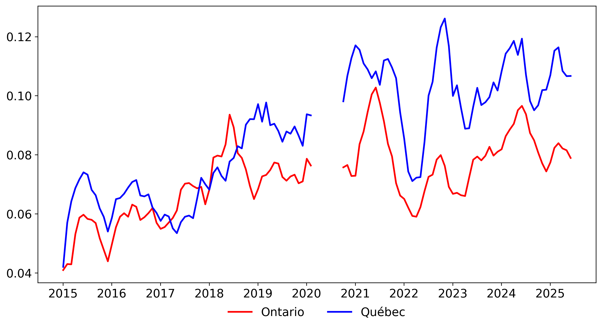
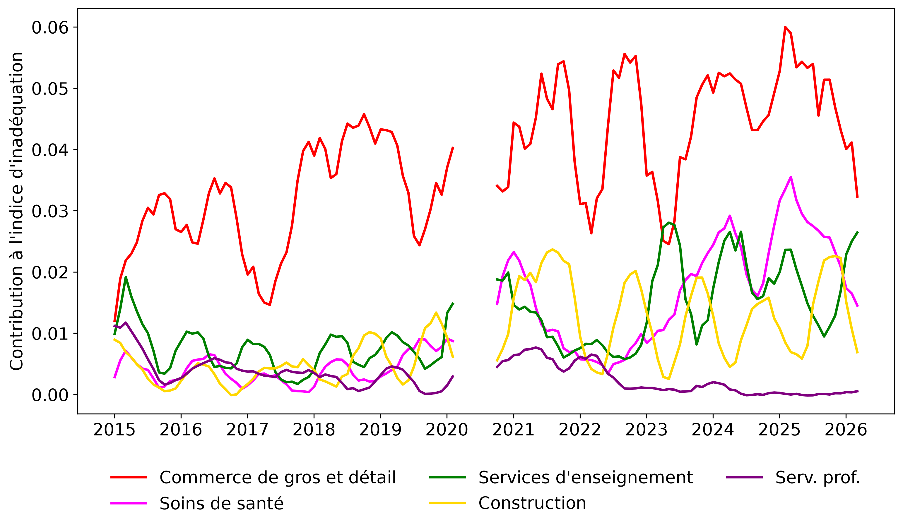

Indice de d’Inadéquation du Marché du Travail au Québec
Fabian Lange, Brennan McLachlan, et Markus Poschke
Ce projet explore l'ampleur de l’inadéquation entre les demandeurs d'emploi et les postes vacants au Québec. Une inadéquation peut survenir lorsque ceux qui cherchent un emploi se concentrent dans des segments du marché du travail, par exemple des industries, avec de faibles probabilités de trouver un emploi. Les probabilités de trouver un emploi peuvent être faibles dans certains segments du marché du travail parce que les employeurs ouvrent peu de postes ou parce qu'il est difficile de jumeler les employeurs et les employés dans ces segments. L’inadéquation réduit le taux de recherche d'emploi et augmente le chômage.
Nous présentons ici trois figures qui sont automatiquement mises à jour lorsque Statistique Canada publie les données sur l'emploi via l'Enquête sur la population active (EPA, Tableau 14-10-0022-01) et les données sur les postes vacants via l'Enquête sur les postes vacants et les salaires (EPVS, Tableau 14-10-0442-01).
Suivant la méthodologie de Sahin et al. (2014), la Figure 1 montre un indice d’inadéquation au Québec superposé avec une moyenne mobile de 6 mois pour lisser les fluctuations à court terme. La Figure 2 montre le même calcul effectué pour l'Ontario afin de comparer les deux provinces. La Figure 3 étend le cadre pour décomposer l'indice d’inadéquation au Québec selon la contribution à l’inadéquation totale de cinq industries d'intérêt sélectionnées.
L'indice d’inadéquation est une valeur unique qui quantifie l'écart entre la répartition réelle et la répartition idéale des demandeurs d'emploi dans les différents secteurs de l'économie. Il mesure la fraction des embauches réelles qui n'est pas atteinte par rapport au maximum d'embauches pouvant être réalisé si les demandeurs d'emploi étaient parfaitement répartis entre les secteurs afin de maximiser le taux de placement.
Une valeur plus élevée de l'indice indique un plus grand degré de déséquilibre et une part plus importante des embauches potentielles qui sont perdues. L'indice est influencé à la fois par l’inadéquation entre le nombre de demandeurs d'emploi et le nombre de postes vacants dans une industrie et par l'efficacité de la « technologie d'appariement » (ou des frictions) sur le marché du travail pour cette industrie.
Dernières données EPVS disponibles : Chargement...
Dernières données EPA disponibles : Chargement...



Pour la méthodologie détaillée et les résultats complets :
Télécharger le Rapport Complet(PDF)